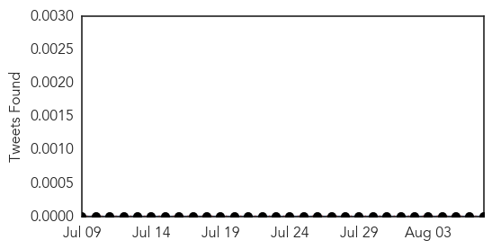

Mold/Fungal
30-Day Web Trend
3 alerts, 1 warnings

30-Day Twitter Trend
0 alerts, 0 warnings

Article Locations

Article Confidences

Top Articles:
Top Tweets:
-
No tweets found for Aug 07, 2015
West Nile Virus
30-Day Web Trend
1 alerts, 2 warnings
30-Day Twitter Trend
1 alerts, 0 warnings

Article Locations

Article Confidences

Top Articles:
- 0.986
- Drought’s effect on West Nile uncertain
- 0.945
- Shirley Police offer tips to prevent
- 0.876
- West Nile virus detected in Minooka mosquito collection
- 0.865
- Bellmawr man is state’s first confirmed West Nile virus case
- 0.833
- Tests find West Nile-positive mosquitoes in Naperville
- 0.565
- Cases of West Nile confirmed in Acadia, St. Mary parishes - KATC.com
Top Tweets:
-
No tweets found for Aug 07, 2015